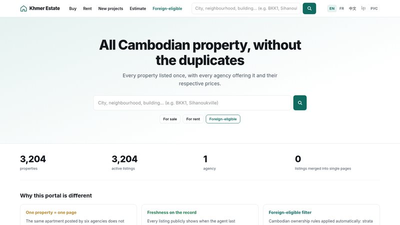

Khmer Estate
A property portal for Cambodia, where the same apartment is often listed by five to ten agencies at different prices. Khmer Estate shows each property once, with every agency that offers it and its price, the day each listing was last confirmed, and a filter for what a foreigner is allowed to buy — in English, French, Chinese, Khmer and Russian.
Un portail immobilier pour le Cambodge, où un même appartement est souvent publié par cinq à dix agences à des prix différents. Khmer Estate montre chaque bien une seule fois, avec toutes les agences qui le proposent et leur prix, le jour où chaque annonce a été confirmée pour la dernière fois, et un filtre pour ce qu’un étranger a le droit d’acheter — en anglais, français, chinois, khmer et russe.
វិបផតថលអចលនទ្រព្យសម្រាប់ប្រទេសកម្ពុជា ដែលអចលនទ្រព្យតែមួយ ច្រើនតែត្រូវបានចុះផ្សាយដោយភ្នាក់ងារពី 5 ទៅ 10 ក្នុងតម្លៃខុសៗគ្នា។ Khmer Estate បង្ហាញអចលនទ្រព្យនីមួយៗតែម្តងគត់ ជាមួយភ្នាក់ងារទាំងអស់ដែលកំពុងផ្តល់ជូន និងតម្លៃរបស់ពួកគេ ថ្ងៃដែលការចុះផ្សាយនីមួយៗត្រូវបានបញ្ជាក់ចុងក្រោយ និងតម្រងសម្រាប់អចលនទ្រព្យដែលជនបរទេសមានសិទ្ធិទិញ — ជាភាសាអង់គ្លេស បារាំង ចិន ខ្មែរ និងរុស្ស៊ី។

One property, one page.
Cambodia has no shared listing service and no exclusive mandates. The same apartment is posted by five to ten agencies, at different prices and with different photos; portals keep listings online more than a year after the sale; and addresses are unreliable, with inconsistent numbering and streets that have no official name.
Khmer Estate keeps the physical property apart from the agency’s listing. The visitor sees one page per property — “2 agencies offer this property, from $182,500 to $185,000” — and each offer shows the day it was last confirmed. A listing nobody reconfirms within 45 days disappears; seven days before, the agent is asked “still available?” and can renew it in one click.
Two more rules come from the market. The foreign-eligible filter applies Cambodian ownership law: a foreigner may buy a unit under strata title, on the first floor or above — not land, not a ground floor. And every property is placed on the map by hand: an address is never turned into coordinates automatically, because outside the city centres the result is wrong.
Real data, not online yet.
The search site, the back office, the duplicate engine, the imports, the neighbourhood pages, the agency dashboard and the alerts are written, each with its own check script. To test them on something other than generated data, 3,405 listings were collected from a public Cambodian property portal in August and September 2026: prices, sizes, floors, positions and photos — never the agents’ names or phone numbers, nor the text of the ad. Descriptions are rewritten in every language from those facts. On 30 October each listing was re-read at the source: 3,204 were still on offer, 114 had been sold or rented and 66 had disappeared.
Some parts have never met the real world. The Telegram bot for agents and the translation of free text call a language model, and have never run against the real API, for lack of a key; the bot has never talked to Telegram; and email alerts have only been written to a local file, never sent through a real provider. The site is not online: before going public, the legal side of reusing the collected listings — the photos above all — has to be settled with the source.
From search to contact.
| Part | What it does |
|---|---|
| Search | Free text that understands local spellings and scripts — bkk one, toul kok, russian market, 西港, សៀមរាប. Filters on price, type, bedrooms, bathrooms, surface, floor, title type, foreign eligibility, furnishing, amenities and freshness; they work before any JavaScript has loaded. |
| Map | Clusters, “search this area”, and a zone drawn by hand — buyers think “around BKK1”, not in kilometres. On a phone, list and map take turns. |
| Property page | Every agency’s offer and price, the last confirmation, price history, four comparable properties, the price against the area median and, for a sale, an estimated gross rental yield. |
| New projects | Condo buildings, boreys (gated housing estates) and their developers, with the listings on offer in each. |
| Area pages | /en/buy/bkk1/condo and the like, written from the real figures of each combination. A page is indexed by search engines only from five properties up: 57 of the 6,160 possible today. |
| Estimate · compare | An estimate from the median price per m² of comparable listings, with its range and sample size; up to four properties side by side. |
| Alerts | Saved searches by email or Telegram, as soon as possible or once a day, with double opt-in and no account. |
| Agencies | A back office to enter properties and confirm listings, and a dashboard: views, contacts, contact rate next to the portal’s, and listings about to expire. |
Made for the Cambodian market.
Duplicates decided by people
The engine merges two listings on its own only when nothing is open to interpretation: same building, same floor, same bedrooms, surface within 2 %. Everything else goes to a review queue. A matching photo is a clue, never a proof: two identical studios shot from the same spot have the same image fingerprint.
Four ways in, one door
The Telegram bot, XML or CSV feeds from agency software, the back office and the portal collection all hand in the same submission, so none can skip the hand-placed pin. On Telegram, the pin is the location the agent shares from the phone. Re-importing the same feed creates nothing new.
Freshness that holds
A collected listing has no agent to remind, so a daily job re-reads each one at the source in its last week. Still on offer: renewed for 45 days. Sold, rented or gone: removed. Anything unclear decides nothing.
Khmer first
Khmer has no spaces between words and stacks its vowels, so lines are taller, words are never cut mid-syllable and no component has a fixed width. The five languages share the same 619 interface strings, checked for parity. On Khmer pages the map uses server-rendered tiles, because the vector map engine cannot shape Khmer script.
Light for cheap phones
Pages are rendered on the server. The results page loads about 150 KB of JavaScript against a 200 KB budget, and the map library only on demand. Load time (LCP) is measured in visitors’ real browsers, not guessed.
Odd prices go to a person
A house for sale at $350 is a typo at the source. A price more than 20 times away from the median of its type and transaction goes to a review queue — 11 of 3,405 — and stays online until someone checks the original listing. The amount is never corrected by guesswork.
Un bien, une fiche.
Le Cambodge n’a ni fichier commun des annonces, ni mandat exclusif. Un même appartement est publié par cinq à dix agences, à des prix différents et avec des photos différentes ; les portails gardent en ligne des annonces plus d’un an après la vente ; et les adresses ne sont pas fiables, entre numérotation incohérente et rues sans nom officiel.
Khmer Estate sépare le bien physique de l’annonce de l’agence. Le visiteur voit une fiche par bien — « 2 agences proposent ce bien, de 182 500 $ à 185 000 $ » — et chaque offre affiche le jour de sa dernière confirmation. Une annonce que personne ne reconfirme en 45 jours disparaît ; sept jours avant, l’agent reçoit un « toujours disponible ? » et la reconduit d’un clic.
Deux autres règles viennent du marché. Le filtre éligible étranger applique le droit cambodgien : un étranger peut acheter un lot en copropriété (titre strata) au premier étage ou au-dessus — ni terrain, ni rez-de-chaussée. Et chaque bien est placé sur la carte à la main : une adresse n’est jamais convertie automatiquement en coordonnées, car hors des centres-villes le résultat est faux.
De vraies données, pas encore en ligne.
Le site de recherche, le back-office, le moteur de dédoublonnage, les imports, les pages de quartier, le tableau de bord des agences et les alertes sont écrits, chacun avec son script de vérification. Pour les éprouver sur autre chose qu’un jeu de données généré, 3 405 annonces ont été collectées sur un portail immobilier cambodgien public en août et septembre 2026 : prix, surfaces, étages, positions et photos — jamais le nom ni le téléphone des agents, ni le texte de l’annonce. Les descriptions sont réécrites dans chaque langue à partir de ces faits. Le 30 octobre, chaque annonce a été relue à la source : 3 204 étaient toujours proposées, 114 avaient été vendues ou louées et 66 avaient disparu.
Certaines parties n’ont jamais affronté le monde réel. Le bot Telegram des agents et la traduction du texte libre appellent un modèle de langage, et n’ont jamais tourné contre la véritable API, faute de clé ; le bot n’a jamais parlé à Telegram ; et les alertes par e-mail n’ont été écrites que dans un fichier local, jamais envoyées par un vrai prestataire. Le site n’est pas en ligne : avant une ouverture publique, la question juridique de la reprise des annonces collectées — les photos d’abord — doit être réglée avec la source.
De la recherche au contact.
| Partie | Ce qu’elle fait |
|---|---|
| Recherche | Un texte libre qui comprend les graphies et les écritures locales — bkk one, toul kok, russian market, 西港, សៀមរាប. Des filtres par prix, type, chambres, salles de bain, surface, étage, type de titre, éligibilité étrangère, ameublement, équipements et fraîcheur ; ils fonctionnent avant même que le JavaScript soit chargé. |
| Carte | Regroupement des points, « rechercher dans cette zone » et zone dessinée à la main — un acheteur pense « autour de BKK1 », pas en kilomètres. Sur téléphone, liste et carte s’affichent tour à tour. |
| Fiche | L’offre et le prix de chaque agence, la dernière confirmation, l’historique des prix, quatre biens comparables, la position du prix face à la médiane du quartier et, pour une vente, le rendement locatif brut estimé. |
| Projets neufs | Immeubles en copropriété, boreys (lotissements fermés) et promoteurs, avec les annonces en cours dans chacun. |
| Pages de quartier | /fr/buy/bkk1/condo et les autres, écrites à partir des chiffres réels de chaque combinaison. Une page n’est indexée par les moteurs de recherche qu’à partir de cinq biens : 57 sur 6 160 possibles aujourd’hui. |
| Estimation · comparaison | Une estimation à partir du prix médian au m² des annonces comparables, avec sa fourchette et la taille de l’échantillon ; jusqu’à quatre biens côte à côte. |
| Alertes | Des recherches sauvegardées, par e-mail ou Telegram, dès que possible ou une fois par jour, avec double confirmation et sans compte. |
| Agences | Un back-office pour saisir les biens et confirmer les annonces, et un tableau de bord : vues, contacts, taux de contact à côté de celui du portail, annonces sur le point d’expirer. |
Pensé pour le marché cambodgien.
Des doublons tranchés par un humain
Le moteur ne fusionne seul deux annonces que si rien n’est sujet à interprétation : même immeuble, même étage, mêmes chambres, surface à 2 % près. Tout le reste part dans une file de validation. Une photo identique est un indice, jamais une preuve : deux studios identiques photographiés au même endroit ont la même empreinte d’image.
Quatre entrées, une seule porte
Le bot Telegram, les flux XML ou CSV des logiciels d’agence, le back-office et la collecte de portail déposent tous la même soumission : aucun ne peut contourner le pin posé à la main. Sur Telegram, le pin est la position que l’agent partage depuis son téléphone. Réimporter le même flux ne crée rien de nouveau.
Une fraîcheur qui tient
Une annonce collectée n’a pas d’agent à relancer : une tâche quotidienne relit donc chacune à la source pendant sa dernière semaine. Toujours proposée : reconduite 45 jours. Vendue, louée ou disparue : retirée. Un doute ne décide rien.
Le khmer d’abord
Le khmer n’a pas d’espace entre les mots et superpose ses voyelles : lignes plus hautes, aucune coupure au milieu d’une syllabe, aucune largeur fixe. Les cinq langues ont les mêmes 619 textes d’interface, à parité vérifiée. En khmer, la carte utilise des tuiles rendues côté serveur, car le moteur vectoriel ne sait pas composer l’écriture khmère.
Léger pour les petits téléphones
Les pages sont rendues côté serveur. La page de résultats charge environ 150 ko de JavaScript pour un budget de 200 ko, et la bibliothèque de carte seulement à la demande. Le temps d’affichage (LCP) est mesuré dans les vrais navigateurs des visiteurs, pas deviné.
Un prix étrange va à un humain
Une maison à vendre 350 $ est une faute de frappe à la source. Un prix plus de 20 fois éloigné de la médiane de son type et de sa transaction part en file de vérification — 11 sur 3 405 — et reste en ligne jusqu’à ce que quelqu’un consulte l’annonce d’origine. Le montant n’est jamais corrigé au jugé.
អចលនទ្រព្យមួយ ទំព័រមួយ។
នៅកម្ពុជា គ្មានប្រព័ន្ធទិន្នន័យការចុះផ្សាយរួម និងគ្មានកិច្ចសន្យាលក់ផ្តាច់មុខទេ។ អាផាតមិនតែមួយត្រូវបានចុះផ្សាយដោយភ្នាក់ងារពី 5 ទៅ 10 ក្នុងតម្លៃខុសៗគ្នា និងជាមួយរូបថតខុសៗគ្នា។ វិបផតថលនានានៅតែបង្ហាញការចុះផ្សាយ ជាងមួយឆ្នាំក្រោយពេលលក់ចេញរួច ហើយអាសយដ្ឋានមិនអាចទុកចិត្តបាន ព្រោះលេខផ្ទះមិនស៊ីសង្វាក់គ្នា និងផ្លូវជាច្រើនគ្មានឈ្មោះផ្លូវការ។
Khmer Estate បំបែកអចលនទ្រព្យពិតប្រាកដ ចេញពីការចុះផ្សាយរបស់ភ្នាក់ងារ។ អ្នកទស្សនាឃើញទំព័រតែមួយសម្រាប់អចលនទ្រព្យនីមួយៗ — «ភ្នាក់ងារ 2 កំពុងផ្តល់ជូនអចលនទ្រព្យនេះ ចាប់ពី $182,500 ដល់ $185,000» — ហើយការផ្តល់ជូននីមួយៗបង្ហាញថ្ងៃដែលវាត្រូវបានបញ្ជាក់ចុងក្រោយ។ ការចុះផ្សាយដែលគ្មាននរណាបញ្ជាក់ឡើងវិញក្នុងរយៈពេល 45 ថ្ងៃ នឹងបាត់ទៅវិញ។ 7 ថ្ងៃមុននោះ ភ្នាក់ងារទទួលបានសំណួរ «នៅមានទៀតទេ?» ហើយអាចបន្តការចុះផ្សាយដោយចុចតែម្តង។
ច្បាប់ពីរទៀតកើតចេញពីទីផ្សារ។ តម្រង ជនបរទេសអាចទិញបាន អនុវត្តច្បាប់កម្មសិទ្ធិកម្ពុជា៖ ជនបរទេសអាចទិញខុនដូដែលមានប័ណ្ណកម្មសិទ្ធិរួម (strata) នៅជាន់ទី 1 ឡើងទៅ — មិនមែនដីធ្លី ឬជាន់ផ្ទាល់ដីទេ។ ហើយអចលនទ្រព្យនីមួយៗត្រូវបានដាក់ទីតាំងលើផែនទីដោយដៃ៖ អាសយដ្ឋានមិនដែលត្រូវបានបម្លែងទៅជាកូអរដោនេដោយស្វ័យប្រវត្តិទេ ព្រោះនៅក្រៅមជ្ឈមណ្ឌលទីក្រុង លទ្ធផលតែងតែខុស។
ទិន្នន័យពិត តែមិនទាន់ដាក់អនឡាញនៅឡើយ។
គេហទំព័រស្វែងរក ផ្ទាំងគ្រប់គ្រង ម៉ាស៊ីនរកការចុះផ្សាយស្ទួន ការនាំចូលទិន្នន័យ ទំព័រតាមសង្កាត់ ផ្ទាំងតាមដានសម្រាប់ភ្នាក់ងារ និងការជូនដំណឹង ត្រូវបានសរសេររួចហើយ ដោយផ្នែកនីមួយៗមាន script ពិនិត្យផ្ទាល់ខ្លួន។ ដើម្បីសាកល្បងលើអ្វីផ្សេងក្រៅពីទិន្នន័យដែលបង្កើតឡើង ការចុះផ្សាយ 3,405 ត្រូវបានប្រមូលពីវិបផតថលអចលនទ្រព្យសាធារណៈមួយនៅកម្ពុជា ក្នុងខែសីហា និងកញ្ញា ឆ្នាំ 2026៖ តម្លៃ ផ្ទៃក្រឡា ជាន់ ទីតាំង និងរូបថត — មិនដែលយកឈ្មោះ ឬលេខទូរស័ព្ទរបស់ភ្នាក់ងារ ឬអត្ថបទនៃការចុះផ្សាយឡើយ។ ការពិពណ៌នាត្រូវបានសរសេរឡើងវិញជាគ្រប់ភាសា ពីទិន្នន័យទាំងនោះ។ នៅថ្ងៃទី 30 ខែតុលា ការចុះផ្សាយនីមួយៗត្រូវបានអានឡើងវិញនៅប្រភព៖ 3,204 នៅតែកំពុងផ្តល់ជូន 114 ត្រូវបានលក់ ឬជួលរួចហើយ និង 66 បានបាត់ទៅ។
ផ្នែកខ្លះមិនទាន់ធ្លាប់ប្រើក្នុងស្ថានភាពពិតនៅឡើយ។ bot Telegram សម្រាប់ភ្នាក់ងារ និងការបកប្រែអត្ថបទសេរី ហៅទៅកាន់ម៉ូដែលភាសា (language model) ប៉ុន្តែមិនទាន់ធ្លាប់ដំណើរការជាមួយ API ពិតប្រាកដទេ ព្រោះគ្មាន key។ bot មិនទាន់ធ្លាប់ភ្ជាប់ទៅ Telegram ទេ ហើយការជូនដំណឹងតាមអ៊ីមែលត្រូវបានសរសេរទុកតែក្នុងឯកសារមួយនៅលើម៉ាស៊ីនប៉ុណ្ណោះ មិនទាន់ធ្លាប់ផ្ញើតាមសេវាពិតទេ។ គេហទំព័រនេះមិនទាន់ដាក់អនឡាញទេ៖ មុននឹងបើកជាសាធារណៈ បញ្ហាផ្លូវច្បាប់នៃការប្រើប្រាស់ការចុះផ្សាយដែលបានប្រមូល — ជាពិសេសរូបថត — ត្រូវតែដោះស្រាយជាមួយប្រភពជាមុនសិន។
ពីការស្វែងរក ដល់ការទាក់ទង។
| ផ្នែក | អ្វីដែលវាធ្វើ |
|---|---|
| ការស្វែងរក | ការស្វែងរកដោយអត្ថបទសេរី ដែលយល់ការសរសេរតាមបែបក្នុងស្រុក និងតាមអក្សរផ្សេងៗ — bkk one, toul kok, russian market, 西港, សៀមរាប។ តម្រងតាមតម្លៃ ប្រភេទ បន្ទប់គេង បន្ទប់ទឹក ផ្ទៃក្រឡា ជាន់ ប្រភេទប័ណ្ណ សិទ្ធិទិញរបស់ជនបរទេស គ្រឿងសង្ហារិម បរិក្ខារ និងភាពថ្មីនៃការបញ្ជាក់ ដែលដំណើរការបានសូម្បីតែមុនពេល JavaScript ផ្ទុករួច។ |
| ផែនទី | ការប្រមូលចំណុចជាក្រុម «ស្វែងរកក្នុងតំបន់នេះ» និងតំបន់ដែលគូរដោយដៃ — អ្នកទិញគិតថា «នៅជុំវិញ BKK1» មិនមែនគិតជាគីឡូម៉ែត្រទេ។ នៅលើទូរស័ព្ទ បញ្ជី និងផែនទីបង្ហាញឆ្លាស់គ្នា។ |
| ទំព័រអចលនទ្រព្យ | ការផ្តល់ជូន និងតម្លៃរបស់ភ្នាក់ងារនីមួយៗ ការបញ្ជាក់ចុងក្រោយ ប្រវត្តិតម្លៃ អចលនទ្រព្យប្រហាក់ប្រហែល 4 ទីតាំងនៃតម្លៃធៀបនឹងតម្លៃមធ្យមរបស់តំបន់ ហើយសម្រាប់ការលក់ គឺផលចំណេញពីការជួលសរុបដែលបានប៉ាន់ស្មាន។ |
| គម្រោងថ្មី | អគារខុនដូ បុរី និងអ្នកអភិវឌ្ឍ ជាមួយការចុះផ្សាយដែលកំពុងមាននៅក្នុងគម្រោងនីមួយៗ។ |
| ទំព័រតាមសង្កាត់ | /km/buy/bkk1/condo និងទំព័រផ្សេងទៀត ដែលសរសេរចេញពីតួលេខពិតនៃបន្សំនីមួយៗ។ ទំព័រមួយត្រូវបាន index ដោយម៉ាស៊ីនស្វែងរក លុះត្រាតែមានអចលនទ្រព្យយ៉ាងហោចណាស់ 5៖ បច្ចុប្បន្ន 57 ក្នុងចំណោម 6,160 ទំព័រដែលអាចមាន។ |
| ប៉ាន់តម្លៃ · ប្រៀបធៀប | ការប៉ាន់តម្លៃពីតម្លៃមធ្យមក្នុងមួយម៉ែត្រការ៉េនៃការចុះផ្សាយប្រហាក់ប្រហែល ជាមួយចន្លោះតម្លៃ និងចំនួនគំរូ។ អចលនទ្រព្យរហូតដល់ 4 ដាក់ប្រៀបធៀបក្បែរគ្នា។ |
| ការជូនដំណឹង | ការស្វែងរកដែលបានរក្សាទុក តាមអ៊ីមែល ឬ Telegram ភ្លាមៗ ឬម្តងក្នុងមួយថ្ងៃ ដោយត្រូវបញ្ជាក់ពីរដង និងមិនចាំបាច់មានគណនី។ |
| ភ្នាក់ងារ | ផ្ទាំងគ្រប់គ្រងសម្រាប់បញ្ចូលអចលនទ្រព្យ និងបញ្ជាក់ការចុះផ្សាយ និងផ្ទាំងតាមដាន៖ ចំនួនអ្នកមើល ការទាក់ទង អត្រាទាក់ទងធៀបនឹងអត្រារបស់វិបផតថលទាំងមូល និងការចុះផ្សាយដែលជិតផុតកំណត់។ |
បង្កើតឡើងសម្រាប់ទីផ្សារកម្ពុជា។
ការចុះផ្សាយស្ទួន សម្រេចដោយមនុស្ស
ម៉ាស៊ីនបញ្ចូលការចុះផ្សាយពីរចូលគ្នាដោយខ្លួនឯង លុះត្រាតែគ្មានអ្វីត្រូវបកស្រាយ៖ អគារដូចគ្នា ជាន់ដូចគ្នា ចំនួនបន្ទប់គេងដូចគ្នា និងផ្ទៃក្រឡាខុសគ្នាមិនលើស 2%។ ករណីផ្សេងទៀតទាំងអស់ ត្រូវដាក់ក្នុងជួរត្រួតពិនិត្យ។ រូបថតដូចគ្នាគ្រាន់តែជាតម្រុយ មិនមែនជាភស្តុតាងទេ៖ ស្ទូឌីយោពីរដែលដូចគ្នា ថតពីកន្លែងតែមួយ មានស្នាមសម្គាល់រូបភាព (fingerprint) ដូចគ្នា។
ច្រកចូល 4 ទ្វារតែមួយ
bot Telegram, ឯកសារ XML ឬ CSV ពីកម្មវិធីរបស់ភ្នាក់ងារ ផ្ទាំងគ្រប់គ្រង និងការប្រមូលពីវិបផតថល សុទ្ធតែបញ្ជូនទិន្នន័យក្នុងទម្រង់តែមួយ ដូច្នេះគ្មានច្រកណាអាចរំលងការដាក់ទីតាំងដោយដៃបានទេ។ នៅក្នុង Telegram ទីតាំងនោះគឺជាទីតាំងដែលភ្នាក់ងារចែករំលែកពីទូរស័ព្ទ។ ការនាំចូលឯកសារដដែលម្តងទៀត មិនបង្កើតអ្វីថ្មីទេ។
ភាពថ្មីដែលអាចទុកចិត្តបាន
ការចុះផ្សាយដែលបានប្រមូល គ្មានភ្នាក់ងារដែលត្រូវរំលឹកទេ ដូច្នេះការងារប្រចាំថ្ងៃមួយ អានការចុះផ្សាយនីមួយៗឡើងវិញនៅប្រភព ក្នុងសប្តាហ៍ចុងក្រោយរបស់វា។ នៅតែផ្តល់ជូន៖ បន្ត 45 ថ្ងៃ។ បានលក់ ជួល ឬបាត់៖ ដកចេញ។ ករណីមិនច្បាស់ មិនសម្រេចអ្វីទាំងអស់។
ភាសាខ្មែរមុនគេ
ភាសាខ្មែរគ្មានដកឃ្លារវាងពាក្យ ហើយស្រៈ និងជើងអក្សរដាក់ត្រួតគ្នាពីលើ និងពីក្រោម ដូច្នេះបន្ទាត់ត្រូវខ្ពស់ជាង ពាក្យមិនត្រូវកាត់កណ្តាលព្យាង្គ ហើយគ្មានផ្នែកណាមានទទឹងថេរទេ។ ភាសាទាំង 5 មានអត្ថបទ interface 619 ដូចគ្នា ដែលត្រូវបានពិនិត្យថាគ្រប់គ្រាន់ស្មើគ្នា។ នៅលើទំព័រខ្មែរ ផែនទីប្រើ tiles ដែលបង្ហាញពី server ព្រោះម៉ាស៊ីនផែនទីវ៉ិចទ័រ មិនអាចផ្គុំអក្សរខ្មែរបានត្រឹមត្រូវ។
ស្រាលសម្រាប់ទូរស័ព្ទតម្លៃថោក
ទំព័រត្រូវបានបង្កើតនៅលើ server។ ទំព័រលទ្ធផលស្វែងរកផ្ទុក JavaScript ប្រហែល 150 KB ក្នុងថវិកា 200 KB ហើយបណ្ណាល័យផែនទីត្រូវបានផ្ទុកតែពេលត្រូវការប៉ុណ្ណោះ។ ពេលវេលាបង្ហាញ (LCP) ត្រូវបានវាស់នៅក្នុង browser ពិតរបស់អ្នកទស្សនា មិនមែនទាយទេ។
តម្លៃចម្លែក ត្រូវមនុស្សពិនិត្យ
ផ្ទះលក់ក្នុងតម្លៃ $350 គឺជាកំហុសវាយអក្សរនៅប្រភព។ តម្លៃដែលឃ្លាតពីតម្លៃមធ្យមនៃប្រភេទ និងប្រតិបត្តិការរបស់វាលើសពី 20 ដង ត្រូវដាក់ក្នុងជួរត្រួតពិនិត្យ — 11 ក្នុងចំណោម 3,405 — ហើយនៅតែបង្ហាញ រហូតដល់មាននរណាម្នាក់ពិនិត្យការចុះផ្សាយដើម។ ចំនួនទឹកប្រាក់មិនដែលត្រូវកែដោយការទាយទេ។
How it is built.
| App | Next.js 15, React 19 and TypeScript, rendered on the server, with Tailwind CSS. Search, filters and alerts work without JavaScript. |
| Database | PostgreSQL 17 with PostGIS 3.5, 30 SQL migrations. Rules live in the schema: foreign eligibility is a generated column, a property cannot exist without coordinates, and the audit log refuses edits and deletions. |
| Map | MapLibre GL with OpenFreeMap vector tiles, labels rewritten into the page’s language. It sits behind a provider layer: no component knows which map service it uses. |
| Language model | The Anthropic SDK, to read the listings agents send to the Telegram bot and to translate their free text. Both are checked offline, without spending a token; neither has run against the real API yet. |
| Jobs | Ten scheduled tasks (systemd timers, or cron): alerts, image variants in AVIF, WebP and JPEG, duplicate re-scan, price review, re-reading collected listings, expiry, billing, encrypted backups, audit-log retention and metrics purge. |
| Accounts | Two roles, moderation and agency, each agency seeing only its own data. Sessions stored in the database, scrypt passwords, a TOTP second factor each user can turn on, rate-limited logins, and an audit log written in the same transaction as every moderation action. |
| Partner API | A read-only API (v1) that serves deduplicated properties with their offers — never agents’ contact details. Keys are shown once and stored hashed. |
| Checks | 26 check scripts (npm run check:…): the bot conversation, duplicate rules, alert matching, search-engine tags, billing, backups and more. |
| Docs | A detailed README and the project brief, in French; the partner API contract; and two studies, of a mobile app and of a WeChat mini-program, which both conclude that it is too early. |
Comment c’est construit.
| Application | Next.js 15, React 19 et TypeScript, rendu côté serveur, avec Tailwind CSS. Recherche, filtres et alertes fonctionnent sans JavaScript. |
| Base de données | PostgreSQL 17 avec PostGIS 3.5, 30 migrations SQL. Les règles vivent dans le schéma : l’éligibilité étrangère est une colonne calculée, un bien ne peut exister sans coordonnées, et le journal d’audit refuse modifications et suppressions. |
| Carte | MapLibre GL avec les tuiles vectorielles d’OpenFreeMap, libellés réécrits dans la langue de la page. Elle passe par une couche d’abstraction : aucun composant ne sait quel service de carte il utilise. |
| Modèle de langage | Le SDK Anthropic, pour lire les annonces que les agents envoient au bot Telegram et pour traduire leur texte libre. Les deux sont vérifiés hors ligne, sans consommer de jeton ; aucun n’a encore tourné contre la véritable API. |
| Tâches | Dix tâches planifiées (timers systemd, ou cron) : alertes, variantes d’images AVIF, WebP et JPEG, réexamen des doublons, revue des prix, relecture des annonces collectées, expiration, facturation, sauvegardes chiffrées, rétention du journal d’audit et purge des mesures. |
| Comptes | Deux rôles, modération et agence, chaque agence ne voyant que ses propres données. Sessions en base, mots de passe scrypt, second facteur TOTP que chacun peut activer, tentatives de connexion limitées, et un journal d’audit écrit dans la même transaction que chaque action de modération. |
| API partenaires | Une API en lecture seule (v1) qui sert les biens dédoublonnés avec leurs offres — jamais les coordonnées des agents. Les clés ne s’affichent qu’une fois et sont stockées hachées. |
| Vérifications | 26 scripts de vérification (npm run check:…) : conversation du bot, règles de dédoublonnage, correspondance des alertes, balises pour les moteurs de recherche, facturation, sauvegardes, et d’autres. |
| Docs | Un README détaillé et le brief du projet, en français ; le contrat de l’API partenaires ; et deux études, sur une application mobile et sur un mini-programme WeChat, qui concluent toutes deux qu’il est trop tôt. |
របៀបដែលវាត្រូវបានបង្កើត។
| កម្មវិធី | Next.js 15, React 19 និង TypeScript បង្ហាញពី server ជាមួយ Tailwind CSS។ ការស្វែងរក តម្រង និងការជូនដំណឹង ដំណើរការបានដោយគ្មាន JavaScript។ |
| មូលដ្ឋានទិន្នន័យ | PostgreSQL 17 ជាមួយ PostGIS 3.5 និង SQL migrations ចំនួន 30។ ច្បាប់ស្ថិតនៅក្នុង schema ផ្ទាល់៖ សិទ្ធិទិញរបស់ជនបរទេសជា column ដែលគណនាដោយស្វ័យប្រវត្តិ អចលនទ្រព្យមិនអាចមានដោយគ្មានកូអរដោនេ ហើយកំណត់ហេតុ audit បដិសេធការកែប្រែ និងការលុប។ |
| ផែនទី | MapLibre GL ជាមួយ vector tiles របស់ OpenFreeMap ដែលឈ្មោះទីកន្លែងត្រូវបានសរសេរឡើងវិញជាភាសារបស់ទំព័រ។ វាឆ្លងកាត់ស្រទាប់អរូបីមួយ ដូច្នេះគ្មាន component ណាដឹងថាខ្លួនប្រើសេវាផែនទីមួយណាទេ។ |
| ម៉ូដែលភាសា | Anthropic SDK សម្រាប់អានការចុះផ្សាយដែលភ្នាក់ងារផ្ញើទៅ bot Telegram និងសម្រាប់បកប្រែអត្ថបទសេរីរបស់ពួកគេ។ ទាំងពីរត្រូវបានពិនិត្យដោយមិនភ្ជាប់អ៊ីនធឺណិត និងមិនចំណាយ token ទេ ប៉ុន្តែមិនទាន់ធ្លាប់ដំណើរការជាមួយ API ពិតប្រាកដនៅឡើយ។ |
| ការងារតាមកាលវិភាគ | ការងារតាមកាលវិភាគ 10 (systemd timers ឬ cron)៖ ការជូនដំណឹង រូបភាពជា AVIF, WebP និង JPEG ការពិនិត្យការចុះផ្សាយស្ទួនឡើងវិញ ការពិនិត្យតម្លៃ ការអានការចុះផ្សាយដែលបានប្រមូលឡើងវិញ ការផុតកំណត់ វិក្កយបត្រ ការបម្រុងទុកដែលបានអ៊ិនគ្រីប ការរក្សាទុកកំណត់ហេតុ audit និងការលុបទិន្នន័យវាស់វែងចាស់ៗ។ |
| គណនី | តួនាទីពីរ គឺអ្នកសម្របសម្រួល និងភ្នាក់ងារ ដោយភ្នាក់ងារនីមួយៗឃើញតែទិន្នន័យរបស់ខ្លួន។ session រក្សាទុកក្នុងមូលដ្ឋានទិន្នន័យ ពាក្យសម្ងាត់ scrypt កត្តាផ្ទៀងផ្ទាត់ទីពីរ TOTP ដែលអ្នកប្រើម្នាក់ៗអាចបើកបាន ការកំណត់ចំនួនដងនៃការព្យាយាមចូល និងកំណត់ហេតុ audit ដែលសរសេរក្នុង transaction តែមួយជាមួយសកម្មភាពសម្របសម្រួលនីមួយៗ។ |
| API ដៃគូ | API សម្រាប់តែអាន (v1) ដែលផ្តល់អចលនទ្រព្យដែលបានដកការស្ទួនចេញ ជាមួយការផ្តល់ជូនរបស់វា — មិនដែលផ្តល់ព័ត៌មានទំនាក់ទំនងរបស់ភ្នាក់ងារទេ។ key បង្ហាញតែម្តង ហើយរក្សាទុកជា hash។ |
| ការធ្វើតេស្ត | script ពិនិត្យ 26 (npm run check:…)៖ ការសន្ទនារបស់ bot ច្បាប់រកការចុះផ្សាយស្ទួន ការផ្គូផ្គងការជូនដំណឹង tags សម្រាប់ម៉ាស៊ីនស្វែងរក វិក្កយបត្រ ការបម្រុងទុក និងផ្សេងៗទៀត។ |
| ឯកសារ | README លម្អិត និង brief របស់គម្រោង ជាភាសាបារាំង កិច្ចសន្យានៃ API ដៃគូ និងការសិក្សាពីរ អំពីកម្មវិធីទូរស័ព្ទ និង mini-program WeChat ដែលទាំងពីរសន្និដ្ឋានថា នៅលឿនពេកនៅឡើយ។ |